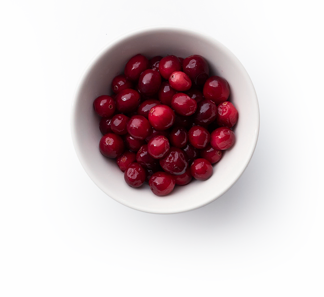

信州産のお米と糀、
浅間山系の水だけを使用した糀あまさけに
アサイーとツルコケモモ（クランベリー）の
果汁をMIXしたら、朝のからだにうれしい
爽やかな一杯ができました。
明日の朝もまた飲みたい！ と
続けられるおいしさをすべての人に。
「朝いい糀」がお届けするのは、
1日を元気にスタートできる新しい朝の習慣です。
-
アサイーは、ブラジル原産のヤシ科植物「ワカバキャベツヤシ」に実る丸くて小さい果実です。ポリフェノール、鉄分、ビタミンEなど多くの栄養成分を含んでいることから「スーパーフード」の代表格として好まれています。
-
糀あまさけ">
古くから日本で親しまれ、「飲む点滴」と言われるほど栄養成分が豊富に含まれている糀あまさけ。「朝いい糀」に使用している糀あまさけは、信州産のお米と糀、浅間山系の水のみでつくられています。
-
 ツルコケモモ（クランベリー）は、甘酸っぱく爽やかな北アメリカ原産の果実です。ポリフェノール、キナ酸・ビタミンCなど多くの栄養成分が含まれ、アメリカではジュースやドライフルーツで食す習慣があります。
-
あまさけ特有の甘さが苦手で続かなかった人にもおいしく。ツルコケモモの甘酸っぱさが加わることで、糀あまさけの成分はそのままに、まるでフルーツヨーグルトのような爽やかな飲み口に。
爽やかな飲み口 / 果汁10%
-
砂糖・食塩はもちろん、香料・着色料・保存料は不使用。余計なものを加えず、からだにうれしい素材にこだわることで、一日を元気にスタートできる朝にぴったりのおいしさができました。
砂糖・食塩不使用 / 香料・着色料・保存料不使用
-
『朝いい糀』はノンアルコールだから、これから活動する朝にぴったり。糀あまさけを習慣にしたい方はもちろん、妊婦さんや授乳中のママさん、お子さんの食育にもオススメの一杯です。
アルコール0%
-
新年に向けて、ただいま仕込み中。
2021年2月入荷予定
2021年2月、できたて発売予定 -
新年に向けて、ただいま仕込み中。
2021年2月入荷予定
2021年2月、できたて発売予定 -
新年に向けて、ただいま仕込み中。
2021年2月入荷予定
2021年2月、できたて発売予定
※Amazonプライム会員なら配送料無料でご購入いただけます。
-
お召し上がり方
毎朝100mlを目安に一杯。冷やして飲むととってもおいしい。
※おいしいからといって、飲み過ぎにはご注意ください。
-
賞味期限について
製造日から6ヶ月となっています。開封後は冷蔵庫で保存し、賞味期限に関わらずお早めに飲みきってください。
※賞味期限の日付は、商品ラベル内に記載しています。
-
QUESTION 01
「朝いい糀」は
何でできていますか？「朝いい糀」は、信州産の米と糀、浅間山系の水で作った糀あまさけとアサイー果汁とツルコケモモ（クランベリー）の果汁、クエン酸でできています。砂糖や食塩、香料・着色料・保存料は使っていません。果汁量は10％です。
-
QUESTION 02
「朝いい糀」は
どんな人にオススメですか？「朝いい糀」は、朝の習慣として続けられるあまさけを目指して開発しました。健康や美容のためにあまさけに興味ある方はもちろん、あまさけ特有の甘さが苦手で挫折したことがある方にもオススメです。
-
QUESTION 03
アルコールは入っていますか？
「朝いい糀」に使用しているあまさけは、酒粕からつくるあまさけと異なりアルコール0％です。そのため、妊婦さんや授乳中のママさん、お子さんもお飲みいただけます。
-
QUESTION 04
「朝いい糀」の
賞味期限はどのくらいですか？「朝いい糀」の賞味期限は、常温で製造日より6ヶ月です。ラベルに記載しています。開封後は冷蔵庫に保管いただき、賞味期限に関わらず早めに飲みきってください。